Kultum–Kultur Bertumbuh is a sustainability collective shaped by our Indonesian heritage, centring lived experience in the built environment.
We are also one of the finalists for Decarbonising Transport Awards 2026 following our commitment to:
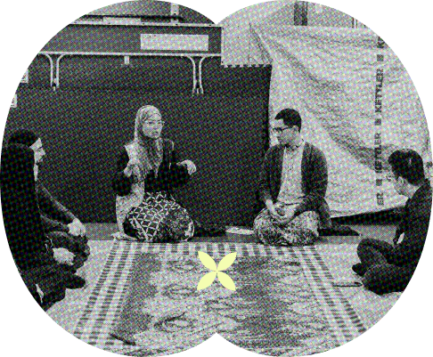
Rooted in Indonesian and diasporic traditions of movement, communal care, and gathering, our work recognises that how people travel, inhabit space, and celebrate is shaped by memory and belonging.
We centre these lived experiences in conversations around sustainability, including active travel, co-design, and upcycling.
Culture for us is not symbolic - it is infrastructural. It shapes how towns and cities feel, function, and evolve.
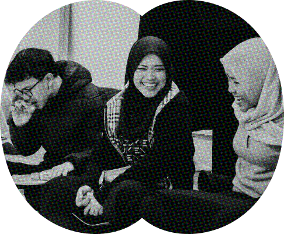
We design with communities, not for them.
Through walking, play, dialogue, and co-design, we create spaces where people can reflect on how they experience their neighbourhoods. We prioritise intergenerational voices and those often excluded from planning processes.
Our aim is to strengthen trust, participation, and shared responsibility - ensuring that change is inclusive, grounded, and collectively shaped.
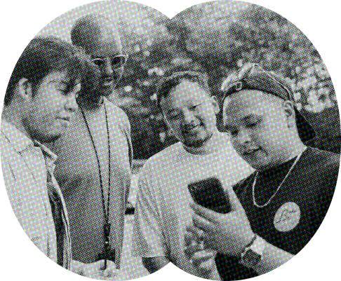
We believe meaningful change is relational.
Kultum works across community groups, educators, designers, and institutions to connect lived experience with professional practice. By bridging grass-roots insight with strategic thinking, we support safer, lower-waste, and more equitable environments for all.
Collaboration, for us, is long-term and mutual - built on shared learning and collective accountability.
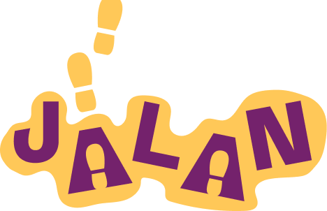
Jalan is Kultum’s series of community walking audits designed around chats, grubs, and mobile app. Blending inclusive lived experiences with urban design tools, we centre walkability, accessibility, and safety through specific lenses of the under-represented groups.
Jalan means “walk” in Bahasa Indonesia. Within Kultum’s active travel and co-design initiatives, Jalan signifies more than physical movement. It is a metaphor for community resilience, collective action, and the everyday right to feel safe and welcome in public space.
Our Method
Our Scientific Alignment
Jalan references and supports the goals of:
Our participatory audit method is inspired by:
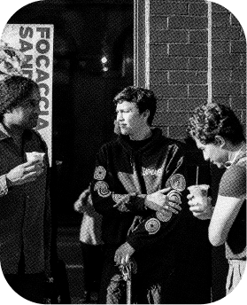
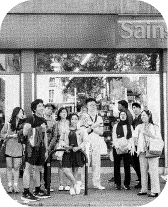
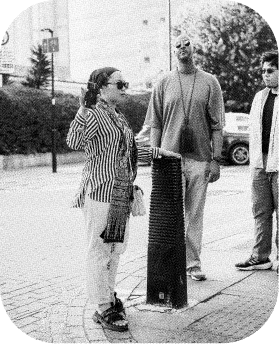
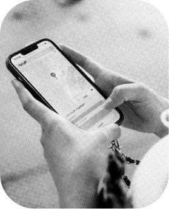
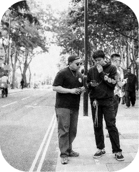
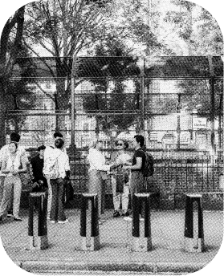
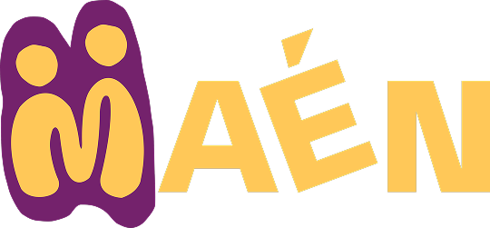
Maén is Kultum’s series of youth- and family-led creative co-design programme. Building on Jalan’s walking audits, Maén transforms spatial audits into playful, participatory design sessions. Through games, drawing, mapping, and storytelling, participants imagine and prototype the public spaces they want to see.
Maén means play in Bahasa Indonesia. For us, play is not recreational alone - it is analytical, relational, and political. It reveals how space feels, who it welcomes, and where change is needed.
We believe play belongs to everyone - across age, background, and ability. In Maen, communities become designers of their own environments.
Our Methods
Our Scientific Alignment
Maén aligns with evidence-based research on:
Our events take place at different times throughout the year. As Kultum is a passion project alongside our full-time work, we treat it as a creative playground - which means meaningful gatherings for communities. We usually run 5-6 events each year. The best place to hear about new dates and updates is our Instagram @kultum.co. We are always open to collaborating on new events.
Kultum is rooted in Indonesian lived experience, but we are not exclusively for Indonesians. We warmly welcome people of all ages, backgrounds, and identities. We are we’re especially passionate about creating space for under-represented communities in the UK.
We love collaborating — with individuals, collectives, organisations, and communities. Our work centres culture, community, and collaboration, and includes:
We are particularly open to projects connected to under-represented communities in active travel, public spaces, urban-rural connectivity, and co-design.
We would love to hear from you! Please email kultum.co@gmail.com with a short introduction and your ideas.
Yes — we would love that! If you are interested in volunteering, email kultum.co@gmail.com and we will share details about our volunteering scheme and upcoming opportunities.
In most cases, yes. We document our events to celebrate and share the community we build together. We always seek consent before photographing participants, so you can feel comfortable and safe at our events. Your comfort and choice are our priority.